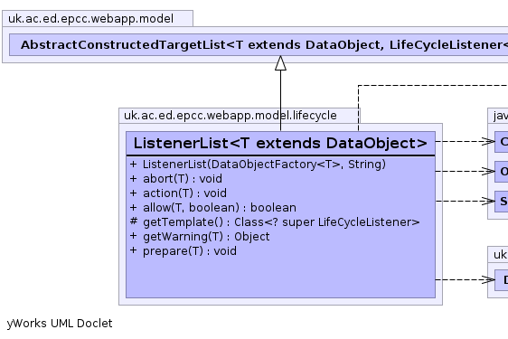
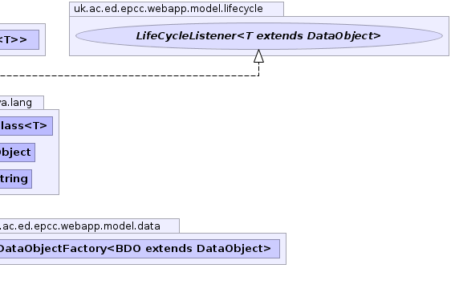

T - public class ListenerList<T extends DataObject> extends AbstractList<T,LifeCycleListener<T>> implements LifeCycleListener<T>
LinkedList of AbstractActions that is populated
from configuration parameters.
The aim is to remove unnecessary code dependencies
This looks in the parameter tag.list-name where
tag is the configuration tag for the parent factory.
This value is interpreted as a comma separated list of class tags and used to create the
listeners. The target classes for the listeners and the factory are checked for type conflicts.|  |  |
| Constructor and Description |
|---|
ListenerList(DataObjectFactory<T> factory,
java.lang.String list_name) |
| Modifier and Type | Method and Description |
|---|---|
void |
abort(T target)
A prepared event has been aborted.
|
void |
action(T target)
Called after the event has taken place (and any external actions have completed) to allow the
LifeCycleListener to
make/finalise corresponding changes to its own objects. |
boolean |
allow(T target,
boolean throw_reason)
Does the
ActionListener want to allow the event to take place. |
protected java.lang.Class<? super LifeCycleListener> |
getTemplate() |
void |
prepare(T target)
The target has started the event but will be waiting for external actions to be completed.
|
getContext, getLogger, getTargetadd, add, addAll, addAll, addFirst, addLast, clear, clone, contains, descendingIterator, element, get, getFirst, getLast, indexOf, lastIndexOf, listIterator, offer, offerFirst, offerLast, peek, peekFirst, peekLast, poll, pollFirst, pollLast, pop, push, remove, remove, remove, removeFirst, removeFirstOccurrence, removeLast, removeLastOccurrence, set, size, toArray, toArrayequals, hashCode, listIterator, removeRange, subListcontainsAll, isEmpty, removeAll, retainAll, toStringfinalize, getClass, notify, notifyAll, wait, wait, waitpublic ListenerList(DataObjectFactory<T> factory, java.lang.String list_name)
protected java.lang.Class<? super LifeCycleListener> getTemplate()
getTemplate in class AbstractList<T extends DataObject,LifeCycleListener<T extends DataObject>>public boolean allow(T target, boolean throw_reason) throws LifeCycleException
ActionListenerActionListener want to allow the event to take place. This is to give the
listener a chance to veto the event when it knows in advance its not capable of supporting the operation in its current state.
For example veto project setup because there are no machines configured.allow in interface ActionListener<T extends DataObject>LifeCycleExceptiontarget - object.throw_reason - set to true to throw exception instead of returning boolean.public void action(T target)
ActionListenerLifeCycleListener to
make/finalise corresponding changes to its own objects.action in interface ActionListener<T extends DataObject>public void prepare(T target) throws java.lang.Exception
LifeCycleListenerLifeCycleListener to make some immediate changes without waiting for
the external action to complete. These changes should ideally be capable of reverse/cancel as the operation may still be aborted by calling LifeCycleListener.abort(Object) rather than
completed by calling ActionListener.action(Object).
Normally this is called after the target has been changed to an intermediate state but before the external operation (such as a ticket) has been requested. Setting an intermediate state on the target allows it to detect and avoid a circular cascade where actions in the listener re-triggers the original event.
This method could trigger its own cascaded life-cycle operations if we want their external operations to be issued before the triggering operation. However this may impact our ability to make the operations abort-able as their cascaded external operations may already have been completed when the primary operation is aborted.
If there are no external actions required this method may not be called and ActionListener.action(Object)
will be called directly.
If this method throws an Exception the target object has the option of rolling back its own changes
and any made by other LifeCycleListeners. It is therefore legal for the last LifeCycleListener in the
chain to trigger the external action from its prepare method.
prepare in interface LifeCycleListener<T extends DataObject>java.lang.Exceptionpublic void abort(T target)
LifeCycleListenerLifeCycleListener try to clean-up any changes it made in
the LifeCycleListener.prepare(Object) call. For example by returning to the original state or cancelling the
change.abort in interface LifeCycleListener<T extends DataObject>